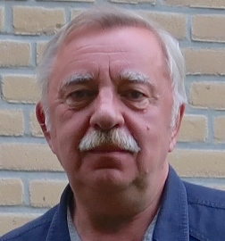

Учебник по Хемометрике
РХО представляет электронный учебник "Введение в Хемометрику", написанный коллективом авторов и свободно доступного для всех желающих. PDF файл с актуальной версией учебника (v. 1.0.0 от 18 августа 2023 г.) можно скачать по этой ссылке (20.7 Мб). Дополнительные материалы доступны в GitHub репозитории учебника.
Учебники и пособия
Все учебники доступны в виде PDF файлов.
Что такое хемометрика
Хемометрика — это научная дисциплина, находящаяся на стыке химии и математики, предметом которой являются
математические методы изучения химических явлений. Научные работы по хемометрике публикуются в широком
спектре журналов среди которых можно выделить Journal of Chemometrics и Chemometrics and
Intelligent Laboratory Systems
Российское хемометрическое общество (РХО) — это некоммерческая организация целью которой является
популяризация и развитие хемометрики в России. РХО является организатором зимнего симпозиума по хемометрике (WSC), который проходит раз в два
года в разных городах России и собирает вместе российских и зарубежных ученых.
Оргкомитет РХО
-
 Председатель
Дмитрий Кирсанов
д.х.н., проф.
Институт химии СПбГУ
Председатель
Дмитрий Кирсанов
д.х.н., проф.
Институт химии СПбГУ
-
 Оксана
Родионова
д.ф.-м.н., в.н.с.
ИХФ РАН
Оксана
Родионова
д.ф.-м.н., в.н.с.
ИХФ РАН
-

Алексей
Померанцев
д.ф.-м.н., г.н.с.
ИХФ РАН
-
 Сергей Кучерявский
к.ф.-м.н., доцент
Университет Ольборга
Сергей Кучерявский
к.ф.-м.н., доцент
Университет Ольборга